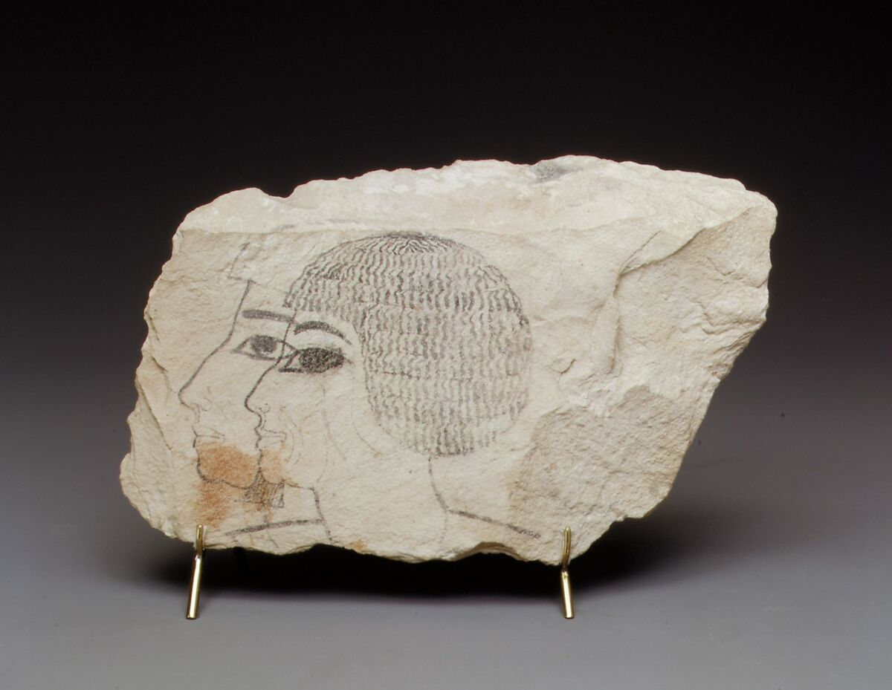
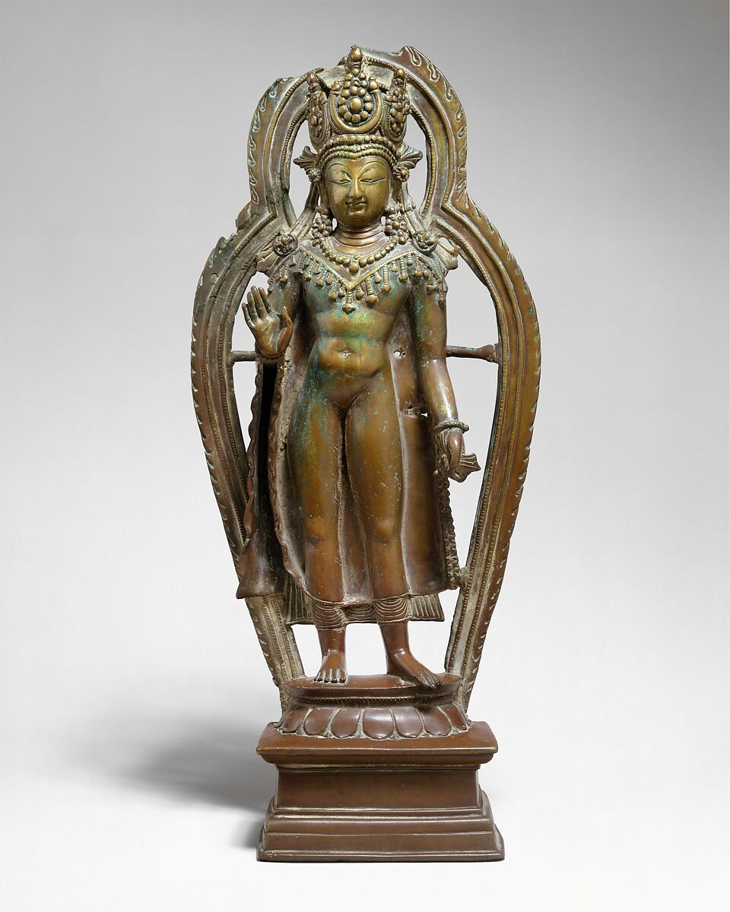
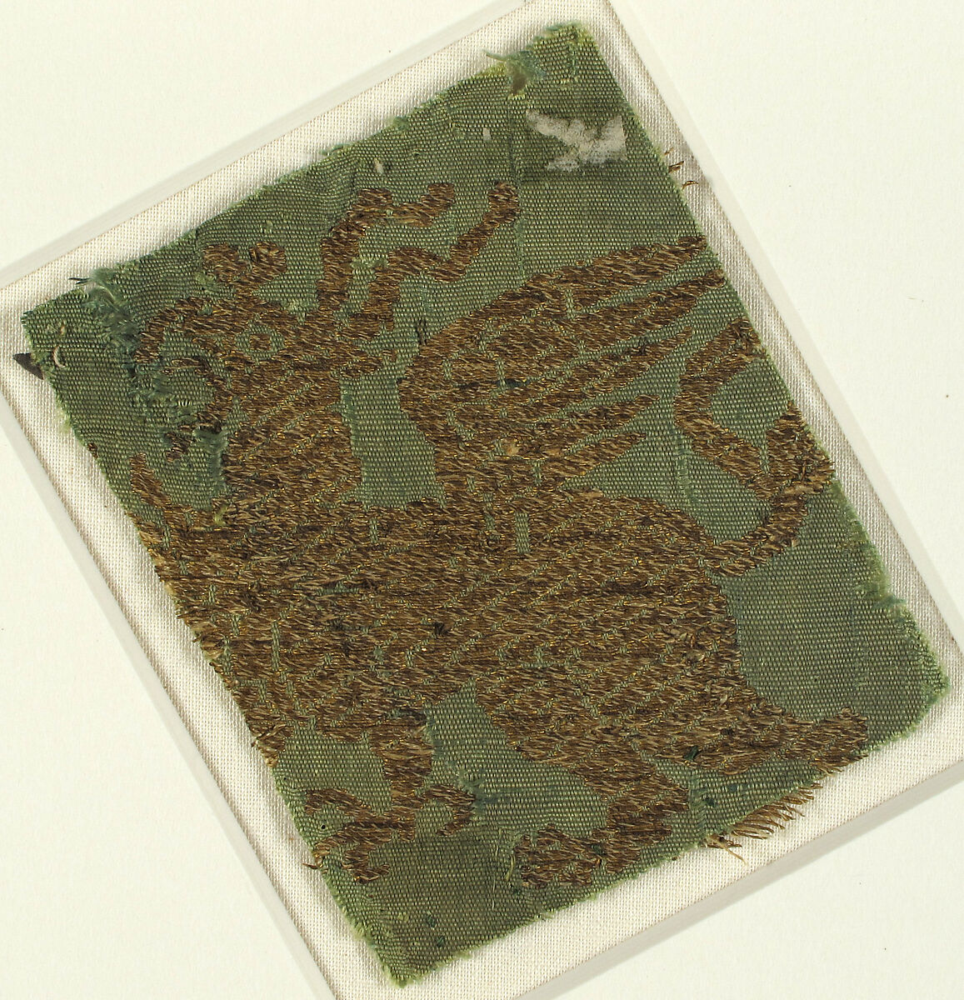
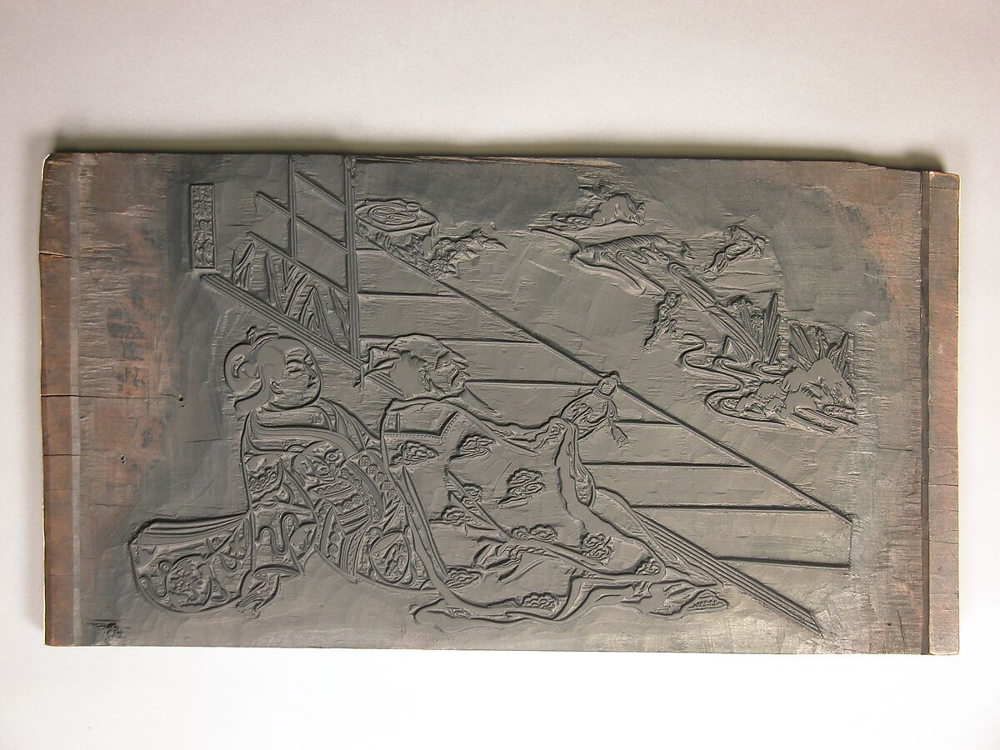
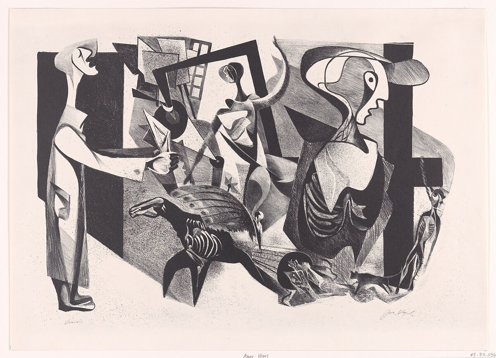

The human need for expression
Across every culture and era, people have made marks, shaped materials and decorated their world. Archaeologists find art alongside the earliest tools, which suggests that expression is as basic to us as survival.
Art can record events, honor beliefs, tell stories or simply express a feeling. The materials change over time, from pigment and stone to thread and printing blocks, but the urge behind them stays the same.
Add a short quotation here, with its source in a cite tag.
A few moments in the story





Sources: The Metropolitan Museum of Art, Heilbrunn Timeline of Art History.